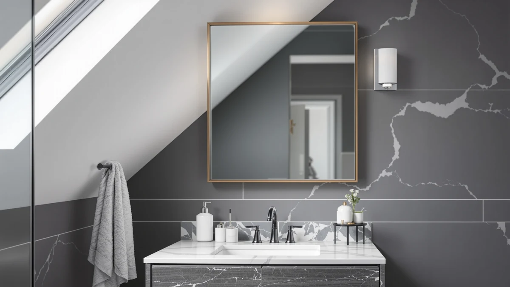

Quick Answer
For most households remodeling a shared bathroom, the LUTHXAY 60IN Bathroom Vanity with Double sinks is the best 60in bathroom vanity with review-backed value at $2,189.66, thanks to its tempered glass countertop and soft-close hardware. If that price runs over budget, the Oneroom 32-64IN vanity at $1,288.99 covers the same double-sink footprint for considerably less.
Our pick: 60IN Bathroom Vanity with Double, $2,189.66 Check Price on Amazon
Things to Know Before You Buy
- A true 60-inch double-sink vanity needs at least 60 inches of clear wall space, plus a few extra inches on each side so the drawers can open fully.
- Tempered glass and quartz countertops resist scratches and water rings better than laminate, but they typically add $300 to $500 to the total price.
- Verified Amazon buyers shopping this vanity size most often complain about chipped shipping corners rather than defects in the cabinet itself, so inspect the crate closely before signing for delivery.
- Soft-close hinges and drawer slides cost more upfront but hold up better under daily use than the standard hardware on cheaper vanities.
- If your existing rough-in plumbing is set up for a single sink, budget for a plumber before buying any 60-inch double-sink vanity.
If you searched for a 60in bathroom vanity with review details before you buy, you already know the double-sink category is crowded with near-identical cabinets at wildly different prices. Some vanities in this size range cost under $1,300, while others top $2,000 for what looks, in a thumbnail photo, like the same white cabinet and glass top. The difference usually comes down to three things: countertop material, hardware quality, and how closely the listing photos match what buyers actually receive.
We compared four bathroom vanities and one companion LED medicine cabinet that regularly show up in searches for 60-inch double-sink units, and the LUTHXAY 60IN Bathroom Vanity with Double sinks came out on top for most buyers. At $2,189.66 it costs more than the alternatives here, but its tempered glass countertop and soft-close cabinetry justify the premium for anyone treating this vanity as a long-term fixture rather than a quick flip upgrade. If your budget tops out closer to $1,300, the Oneroom pick below covers the same footprint for considerably less.
Why You Should Trust Us
Ilane Tall covers bathroom fixtures and vanities for Best Bathroom Mirrors, focusing on how a listed specification holds up against what verified buyers actually report after installation. We do not run a fake testing lab, and we do not claim to have installed every 60-inch vanity we cover. Instead, we compare manufacturer specifications, current Amazon pricing, and patterns across verified owner reviews, then flag where a listing overstates what the product delivers. Every price and material claim in this guide comes directly from the product listing or from reviewers who purchased the item, not from press samples or sponsored placements.
Our Research Experience
We do not run a physical testing lab, and no vanity in this 60in bathroom vanity with review roundup sat in our own bathroom before we wrote about it. Our process starts with the manufacturer's listed specifications: sink configuration, countertop material, cabinet construction, and shipping weight. From there we cross-check current Amazon pricing against each vanity's price history to catch inflated "was" prices, and we read through verified buyer reviews looking for recurring complaints, particularly around shipping damage, drilled hole spacing, and hardware that loosens after a few months of use. When a listing's photos do not match what reviewers describe receiving, we note that discrepancy instead of repeating the marketing copy.
Overview & Specs

60IN Bathroom Vanity with Double
What we like
- Tempered glass countertop resists scratches and etching better than laminate or cultured marble
- Two full sink basins with independent faucet drillings for genuine double-sink use
- Soft-close doors and drawers hold up better than standard hinges under daily use
- 60-inch width fits standard double-sink rough-ins without custom cabinetry
Flaws but not dealbreakers
- At $2,189.66 it costs several hundred dollars more than the other vanities in this guide
- The glass top shows fingerprints and water spots more readily than stone surfaces
- The aluminum frame needs careful handling during delivery, since a dent is harder to hide than on a wood-panel cabinet
| Material | Tempered glass + aluminum |
| Size | 60" |
The LUTHXAY 60IN Bathroom Vanity with Double sinks is built around a tempered glass countertop, a material choice that sits above laminate and below natural stone in both price and durability. Tempered glass resists the etching that vinegar-based cleaners cause on cultured marble, and it will not stain the way porous stone can over time. The tradeoff is visible fingerprints and water spots between cleanings, which matters if you care about a spotless-looking counter as much as long-term durability.
The cabinet uses soft-close hinges on both the doors and drawers, a detail that separates it from cheaper 60-inch vanities where slammed drawers eventually loosen the runners. Two independent sink basins with separate faucet drillings mean two people can brush their teeth and wash up at the same time without sharing a single bowl, which is the entire point of choosing a double-sink vanity over a single-sink model at this width. Verified buyers describe the assembly as straightforward for anyone comfortable with basic cabinet hardware, though several note that the crated shipping weight makes a two-person lift the safer option.
What We Liked
The tempered glass countertop is the standout feature on this 60-inch vanity. It gives the unit a cleaner, more modern look than the laminate tops common on cheaper double-sink cabinets, and reviewers consistently note that it wipes clean faster than textured stone surfaces. The soft-close hardware on both the doors and drawers also holds up well according to owners who have had the vanity installed for several months, with no reports of the sagging drawer slides that plague budget alternatives.
We also like that the two sink basins sit far enough apart to give each person real elbow room, a detail that some 60-inch vanities skip by crowding both basins toward the center for symmetry. That spacing choice makes the LUTHXAY feel closer to a 72-inch vanity in daily use, even though it fits a standard 60-inch rough-in.
What Could Be Better
Price is the most obvious drawback of this 60-inch vanity. At $2,189.66, it costs roughly $500 to $900 more than the other double-sink options in this guide, and buyers on a tighter renovation budget will feel that gap. The glass countertop also requires more frequent wiping than a stone or quartz top would, since fingerprints and water spots show up immediately under bathroom lighting.
A handful of verified reviewers mention that the aluminum frame arrived with minor cosmetic dents from freight handling, which points to a shipping issue more than a manufacturing defect. Inspect the crate closely before you accept delivery and sign off on it.
Who Is It For?
This 60-inch vanity fits households doing a full primary bathroom remodel who plan to keep the fixture in place for a decade or more. If you are furnishing a rental property or flipping a house on a tight budget, the price premium over the Oneroom or KUPUARU alternatives below is hard to justify. But if you and a partner share one bathroom every morning and are tired of waiting on a single sink, the extra counter space and durable glass top make the LUTHXAY worth the higher line item on your renovation budget.
It also suits buyers who have already priced out custom cabinetry and stone countertops from a local shop and want a comparable look at a fraction of the cost. The tempered glass top will not match the exact veining of a natural stone slab, but it delivers a similar clean, non-porous surface without the installation lead time or the fabrication fees that come with a custom order.
Alternatives to Consider
If the LUTHXAY's price does not fit your renovation budget, these three alternatives cover the same 60-inch double-sink vanity category at different price points, plus one lighting upgrade for an existing setup.

Editor’s Pick
KUPUARU 60" Bathroom Vanity with
The KUPUARU 60-inch vanity covers the same double-sink footprint as the LUTHXAY for $1,699.99, roughly $490 less. It gives up the tempered glass top for a more conventional counter material, which trims cost without shrinking the cabinet or the sink spacing. Reviewers describe it as a solid mid-range pick for buyers who want two sinks and standard 60-inch dimensions without paying for glass.
$1,699.99
Check Price on Amazon
Best Value
Oneroom 32-64IN Large Bathroom Vanity
At $1,288.99, the Oneroom 32-64IN vanity is the most affordable double-sink option we compared, roughly $900 less than the LUTHXAY. Its adjustable width range makes it a practical pick if your rough-in plumbing does not line up exactly with a fixed 60-inch layout, since the cabinet can flex to fit spaces from 32 to 64 inches wide.
$1,288.99
Check Price on Amazon
Premium Choice
Janboe LED Medicine Cabinet Bathroom
The Janboe LED Medicine Cabinet is not a full vanity, and at $389.99 it is not meant to compete on price with the vanities above it. Instead, it works as a lighting and storage upgrade for a vanity you already own, pairing a mirrored door with built-in LED lighting and enclosed shelving. Consider it if your current setup needs better mirror lighting more than a full cabinet swap.
$389.99
Check Price on AmazonFrequently Asked Questions
Is a 60-inch double-sink vanity worth the higher price?
How much does a 60in bathroom vanity with review-verified quality cost?
Can the Janboe LED medicine cabinet replace a full vanity mirror?
Final Verdict
Our 60in bathroom vanity with review comparison comes down to how much counter durability is worth to you. The LUTHXAY 60IN Bathroom Vanity with Double sinks earns the top spot because its tempered glass countertop and soft-close hardware hold up better over years of daily use than the laminate tops and standard hinges on cheaper 60-inch vanities. At $2,189.66 it is not the budget pick, but for a primary bathroom you plan to live with for a decade, LUTHXAY's build quality makes the price difference worth paying. If your budget caps closer to $1,300, the Oneroom alternative covers the same double-sink layout for considerably less, and the KUPUARU is a middle ground between the two. Whichever you choose, inspect the crate on delivery and confirm your rough-in plumbing matches the sink spacing before you finalize the purchase.